She isn't making sense
Work her up the way you would on the take — examine, investigate, treat as you go. Every move costs ward time, and the clock is watching.
Twenty-four hours of worsening confusion. Yesterday she was "a bit out of it"; tonight she doesn't know where she is. Agitated and frightened, and very pale. Seen by her GP three days ago and started on nitrofurantoin for a urine infection. Her girlfriend is at the bedside.
- 1Work her up in stages — history, then examination, then investigations. You can step back to any completed stage to reassess her; the case counts how often you do.
- 2Order investigations in rounds — the clock jumps by the slowest test. Re-examine when results change the picture.
- 3Commit a diagnosis once the results justify it — only then does treatment open. Then prove you can manage it.
Tap to ask. Each question costs about 30 seconds.

The core systems are quick. Reach for a focused examination when the story calls for it — choosing the right one is the skill.
Nothing is listed — type the examination you want, the way you'd say it on the ward.
Bedside tests are on the trolley. Everything else is ordered on ICE — type it the way you would at the terminal. Build a round, send it; the clock jumps by the slowest test.
You've called it. Now write the plan — free text, the way you'd write it in the notes. Nothing is listed; what you write is what gets done.
Commit your diagnosis
No list to pick from. Name it the way you'd write it in the notes.
You called it wrong.
Now manage it
You've made the diagnosis. This is what separates safe from dangerous — the decisions, with the evidence behind each.
- Anaemia plus thrombocytopenia plus any organ dysfunction is a microangiopathy until proven otherwise. The test that settles it is the cheapest one you can order — ask the lab to look at the film.
- Schistocytes are red cells that have been shredded by fibrin strands in small vessels. Add a platelet count of 18, an LDH of 1800, an undetectable haptoglobin and a negative DAT, and you have mechanical haemolysis. A positive DAT would have sent you to autoimmune haemolysis instead; a negative one is the point.
- The pentad — fever, neurology, renal impairment, MAHA, thrombocytopenia — is a historical description, not a diagnostic checklist. Fewer than one in ten have all five, and waiting for the set is how people die. MAHA plus thrombocytopenia with no other explanation is enough to act.
- The visible haematuria without dysuria, frequency or fever was never a urine infection — the cultures were negative and the dip showed no red cells. That "UTI" was the disease announcing itself, and the nitrofurantoin was a red herring three days long.
- Nitrofurantoin genuinely causes haemolysis in G6PD deficiency — but that is oxidative haemolysis, which gives you bite cells and Heinz bodies, not fragments, and it does not drop the platelets to 18. A fair decoy explains part of the picture; only one diagnosis explains all of it.
- Never transfuse platelets in TTP. It is the single most harmful thing you can do here — it feeds the microvascular thrombosis and is associated with a significant increase in mortality. The low count is consumption, not a deficiency to be topped up. Central line insertion for the exchange does not need them either.
- Plasma exchange takes mortality from about 90% down to 10–20%, and the clock matters: BSH says PEX within four hours of a suspected diagnosis, and certainly by eight. Treat on clinical suspicion — the ADAMTS13 sample is taken before exchange, but the result must never gate the treatment.
- A normal clotting screen is not reassurance here — it is a discriminator. TTP consumes platelets, not clotting factors; deranged INR, APTT and fibrinogen would have pointed you at DIC instead.
- Dialysis-requiring renal failure is rare in TTP and should make you think HUS, especially with a diarrhoeal prodrome and Shiga-toxin E. coli. Lauren's creatinine of 118 is the mild renal involvement that fits TTP.
- This is a designated-centre disease. In England all TTP is managed in regional centres under NHSE highly specialised services — so the job in a district ED is to recognise it, take the samples, avoid the harm, and get her moved with an airway escort.